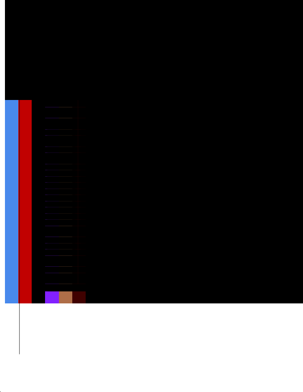

pdf.unknown_region.v1 · page 27
review:comparison_miss:gs001_row_10

- Element
- gs001:row:10
- Conclusion
- Table preset evaluation result; inspect metrics and visual evidence.
- Classification
- second_pass_model_failure
- Expected type
- None
- Extractor emitted
- Body
- Annotation bbox
- [0.14704900006063623, 0.803030303030303, 0.6966853422277114, 0.9060606137670651]
- Actual candidates
- 1
- Validation
- blocked
- Human question
- Second-pass model response was unavailable or invalid; inspect prompt payload and deterministic extraction evidence.
Known visual facts
[ "Representative-page JSON comparison missed `gs001:row:10` because `type_mismatch`. IoU=0.8903, text_similarity=1.0, type_compatible=False.", "This record is escalated to human triage after deterministic filters did not resolve it." ]
Extractor table candidate metrics
{}Adjacent table images
No adjacent table page images supplied.
Expected JSON
{
"id": "gs001:row:10",
"page": 27,
"type": null,
"bbox": [
89.99,
575.53,
514.3,
720.41
],
"text": null,
"source": "agentic_expected_oracle"
}Actual pdf_oxide JSON
{
"id": "f1503c5b0897f9658f34ca038d99919e",
"page": 27,
"type": "Body",
"bbox": [
89.99398803710938,
74.39999389648438,
426.3714294433594,
156.0
],
"text": "1 An information system is a discrete set of information resources organized for the collection, processing, maintenance, use, sharing, dissemination, or disposition of information [OMB A-130]. 2 The term organization describes an entity of any size, complexity, or positioning within an organizational structure (e.g., a federal agency or, as appropriate, any of its operational elements). 3 The two terms information security and security are used synonymously in this publication. 4 [OMB A-130] defines security and privacy controls. 5 Controls provide safeguards and countermeasures in systems security and privacy engineering processes to reduce risk during the system development life cycle. 6 Organizational operations include mission, functions, image, and reputation. 7 Security and privacy control effectiveness addresses the extent to which the controls are implemented correctly, operating as intended, and producing the desired outcome with respect to meeting the designated security and privacy requirements [-SP 80053A].",
"source": "pdf_lab.candidate_text_match",
"similarity_to_comparison_text": 0.2961,
"raw": null,
"selection_reason": "best_text_match_for_second_pass_case"
}Actual candidate extractions
[
{
"id": "f1503c5b0897f9658f34ca038d99919e",
"page": 27,
"type": "Body",
"bbox": [
89.99398803710938,
74.39999389648438,
426.3714294433594,
156.0
],
"text": "1 An information system is a discrete set of information resources organized for the collection, processing, maintenance, use, sharing, dissemination, or disposition of information [OMB A-130]. 2 The term organization describes an entity of any size, complexity, or positioning within an organizational structure (e.g., a federal agency or, as appropriate, any of its operational elements). 3 The two terms information security and security are used synonymously in this publication. 4 [OMB A-130] defines security and privacy controls. 5 Controls provide safeguards and countermeasures in systems security and privacy engineering processes to reduce risk during the system development life cycle. 6 Organizational operations include mission, functions, image, and reputation. 7 Security and privacy control effectiveness addresses the extent to which the controls are implemented correctly, operating as intended, and producing the desired outcome with respect to meeting the designated security and privacy requirements [-SP 80053A].",
"source": null,
"similarity_to_comparison_text": 0.2961,
"raw": null
}
]Validated decision
{
"schema_version": "pdf_lab.second_pass_decision.v1",
"case_id": "review:comparison_miss:gs001_row_10",
"preset_id": "pdf.unknown_region.v1",
"decision": "blocker",
"human_triage_required": true,
"classification": "second_pass_model_failure",
"confidence": "low",
"reason": "Representative-page JSON comparison missed `gs001:row:10` because `type_mismatch`. IoU=0.8903, text_similarity=1.0, type_compatible=False.",
"target_evidence_used": [
{
"field_path": "actual_json.id",
"fact": "Actual element ID is f1503c5b0897f9658f34ca038d99919e."
},
{
"field_path": "actual_json.type",
"fact": "Actual element type is Body."
},
{
"field_path": "actual_json.bbox",
"fact": "Actual element includes a bbox."
},
{
"field_path": "known_visual_facts",
"fact": "Representative-page JSON comparison missed `gs001:row:10` because `type_mismatch`. IoU=0.8903, text_similarity=1.0, type_compatible=False."
}
],
"missing_evidence": [],
"validators": [
{
"validator_id": "preset_id_present",
"status": "pass",
"fact": "pdf.unknown_region.v1"
},
{
"validator_id": "page_present",
"status": "pass",
"fact": "page=27"
},
{
"validator_id": "extraction_evidence_present",
"status": "pass",
"fact": "actual_json or actual_candidates is present"
},
{
"validator_id": "human_triage_boundary",
"status": "pass",
"fact": "agent_resolved records do not create human work; human_triage records preserve the explicit question."
},
{
"validator_id": "model_json_parse",
"status": "blocked",
"fact": "model did not return parseable JSON object"
}
],
"table_merge_review": null,
"human_question": "Second-pass model response was unavailable or invalid; inspect prompt payload and deterministic extraction evidence.",
"recommended_engine_fix": null,
"proposed_json_delta": {
"before": {
"id": "gs001:row:10",
"reviewStatus": "unresolved",
"reason": "type_mismatch"
},
"after": {
"id": "gs001:row:10",
"reviewStatus": "verified",
"resolution": "RECLASSIFY"
}
},
"fixture_candidate": {
"enabled": false,
"fixture_family": null,
"reason": null
}
}